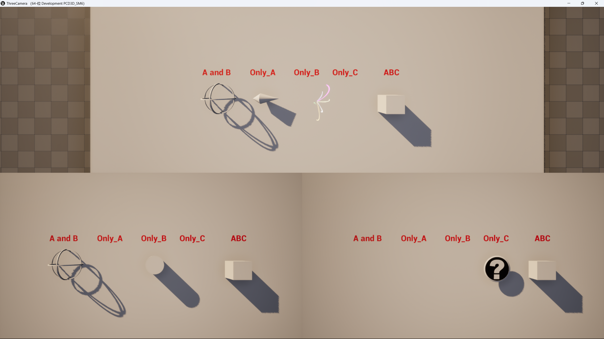

本文将介绍如何在 Unreal Engine 中实现分屏显示（多视口），并且让每个视口中物体的显隐性不同。效果如上图所示：三个视口各自独立渲染，同一个场景中的不同物体在不同视口中的可见性是不同的。图中标注的含义：
- A and B — 对 ViewPawn A 和 B 的视口都可见
- Only_A — 仅对 ViewPawn A 的视口可见
- Only_B / Only_C — 同理，仅对对应视口可见
- ABC — 对所有视口都可见
核心思路：
- 分屏实现：通过注册 Local Player，在项目设置中开启分屏（Split Screen），然后给每个 Player 绑定不同的 Camera。
- 显隐性控制（白名单）：利用 UE 内置的 Owner-based Visibility（基于所有者的可见性） 机制，通过设置 Actor 的 Owner 并配合
Only Owner See/Owner No See节点，实现对不同 Player 视口的独立显隐控制。
一、多视口的实现
1.1 创建蓝图类 BP_ViewPawn
新建一个蓝图类，继承自 Pawn。
Pawn 是 Actor 的子类，专门作为"可被 Controller 控制的实体"设计，自带 Possess/Unpossess 接口，可以直接绑定 Local Player。如果用 Actor，需要额外实现相关功能才能作为 Local Player 的控制目标，不如 Pawn 直接方便。
在 BP_ViewPawn 下挂载一个 Camera 组件即可。
在关卡中放入三个 BP_ViewPawn 实例，分别命名为：
ViewPawn_AViewPawn_BViewPawn_C
1.2 创建蓝图类 BP_MultiCamManager
新建一个蓝图类 BP_MultiCamManager（继承 Actor），用于管理多视口的创建和绑定。
新建三个变量，分别引用三个 ViewPawn：

变量名分别为 ViewPawnA、ViewPawnB、ViewPawnC，类型均为 BP_View Pawn。
1.3 注册 Local Player 并绑定相机
在 BP_MultiCamManager 的 BeginPlay 事件中：
- 使用 Create Local Player 节点注册两个新的 Local Player（Controller Id 分别设为 1 和 2；第一个 Player 默认已存在，所以只需再注册两个，总共三个）。
- 使用 Set View Target with Blend 节点，将每个 Player 与对应的 ViewPawn 绑定。


绑定逻辑重复三次，分别对应 Player 0 → ViewPawn_A、Player 1 → ViewPawn_B、Player 2 → ViewPawn_C。上图为其中一次绑定的细节：Get Player Controller（Player Index = 0）的返回值连接到 Set View Target with Blend 的 Target，New View Target 设为 ViewPawn_A。
1.4 项目设置：开启分屏
打开 Edit → Project Settings → Maps & Modes，确保以下设置：
- Use Split Screen 选项已勾选
- 根据需要的视口数量，在对应的分屏布局选项中调整。本教程使用三视口，可在 Three Player Splitscreen Layout 中选择合适的布局方式

1.5 放入关卡并配置
将 BP_MultiCamManager 拖入关卡中，在 Details 面板中把三个变量分别设置为场景中的 ViewPawn_A、ViewPawn_B 和 ViewPawn_C：

运行游戏，即可看到三视口分屏效果。
二、实现相机白名单（视口级显隐性）
分屏实现了，但默认情况下每个视口看到的画面是完全相同的。要实现「不同视口看到不同物体」，就需要对每个视口做独立的显隐性控制。
本方案使用 UE 引擎内置的 Owner-based Visibility（基于所有者的可见性） 机制。其原理是：每个 Actor 可以设置一个 Owner（所有者），然后通过 Only Owner See 和 Owner No See 节点精确控制该 Actor 的组件对哪些 Player 可见。这正是为多人分屏场景量身打造的功能。
基本思路： 给需要控制显隐的 Actor 打上 Tag（标签名为 CamA、CamB 或 CamC），在 BeginPlay 时通过 Get All Actors with Tag 获取所有相关 Actor，然后调用自定义函数 Apply Visibility Rule，在该函数内通过 Actor Has Tag 判断该 Actor 应该被哪些视口看到，再用 Set Owner 将 Actor 的 Owner 设为对应的 ViewPawn，最后调用 Set Components Only Owner See / Set Components Owner No See 来控制可见性。这种方式只在回合开始时判断一次，适用于显隐关系固定的场景。
2.1 给 Actor 添加 Tag
在需要控制显隐的 Actor 的 Details 面板 → Actor → Tags 属性中，添加对应的标签：
- 如果某个 Actor 只希望被 ViewPawn_A 的视口看到 → 打上
CamA标签 - 如果某个 Actor 只希望被 ViewPawn_B 的视口看到 → 打上
CamB标签 - 如果某个 Actor 只希望被 ViewPawn_C 的视口看到 → 打上
CamC标签 - 如果某个 Actor 希望被多个视口看到 → 同时打上多个标签（如同时打
CamA和CamB）

上图示例：Sphere_A_B 这个 Actor 同时打了 CamA 和 CamB 两个标签，表示它应该对 ViewPawn A 和 ViewPawn B 的视口都可见。
2.2 获取带标签的 Actor 并遍历
使用 Get All Actors with Tag 节点获取所有含有指定标签的 Actor（如 CamA），然后用 For Each Loop 遍历，对每个 Actor 调用自定义函数 Apply Visibility Rule 进行显隐性处理。

2.3 显隐性判断函数 — Apply Visibility Rule
在 Apply Visibility Rule 函数中，建立以下局部变量：

| 变量 | 类型 | 用途 |
|---|---|---|
| bA | Boolean | 该 Actor 是否应对 ViewPawn A 可见 |
| bB | Boolean | 该 Actor 是否应对 ViewPawn B 可见 |
| bC | Boolean | 该 Actor 是否应对 ViewPawn C 可见 |
| target | Actor | 当前正在处理的 Actor |
| VisibilityMask | Integer | 由 bA/bB/bC 计算得出的组合值（0~7） |
首先验证输入有效性，然后用三个 Actor Has Tag 节点分别判断该 Actor 是否包含 CamA、CamB、CamC 标签，结果分别存入布尔变量 A、B、C：

流程为：先 Is Valid 检查输入对象是否有效 → SET target；然后并行执行三个 Actor Has Tag 节点（Tag 分别为 CamA/CamB/CamC）→ 将结果 SET 到 A/B/C 三个布尔变量。
2.4 巧妙的布尔权重方案
因为三个 Player 各有一个布尔值表示「是否在当前视口中可见」，一共有 2³ = 8 种情况（包括全不可见）。如果用 AND 节点逐个连接三个布尔值来判断，节点会非常复杂。
这里使用了一个巧妙的方法——给每个布尔值赋予权重，用 Select Int 节点计算组合值：

使用三个 Select Int 节点：
- 第一个：如果 A 为 true 返回 1，否则返回 0
- 第二个：如果 B 为 true 返回 2，否则返回 0
- 第三个：如果 C 为 true 返回 4，否则返回 0
三个返回值相加后得到一个 0~7 的数字（即 VisibilityMask），每个数字唯一对应一种可见性组合：
| VisibilityMask | A可见 | B可见 | C可见 | 含义 |
|---|---|---|---|---|
| 0 | ✗ | ✗ | ✗ | 全不可见 |
| 1 | ✓ | ✗ | ✗ | 仅 A |
| 2 | ✗ | ✓ | ✗ | 仅 B |
| 3 | ✓ | ✓ | ✗ | A和B |
| 4 | ✗ | ✗ | ✓ | 仅 C |
| 5 | ✓ | ✗ | ✓ | A和C |
| 6 | ✗ | ✓ | ✓ | B和C |
| 7 | ✓ | ✓ | ✓ | 全部可见 |
然后使用 Switch on int 节点，针对每种情况进行分类处理：

Switch on int 的 8 个分支（0~7），每个分支调用不同的显隐处理函数。
2.5 具体的显隐处理 — SetComponentsOwnerNoSee
针对 Switch 的每种情况，分别调用 SetComponentsOwnerNoSee 等函数来设置组件的显隐规则。本方案的核心在于使用 UE 的 Owner-based Visibility 机制。
函数内部的节点连接方式如下：

用到的关键节点说明
| 节点 | 作用 |
|---|---|
| Set Owner | 设置 Actor 的 Owner 为对应的 ViewPawn，这是后续显隐控制的基础 |
| Get Components By Class | 获取 Actor 下所有的 PrimitiveComponent（Mesh 等），因为显隐控制是在组件级别生效的 |
| Cast To PrimitiveComponent | 将组件转换为 PrimitiveComponent 类型 |
| Set Only Owner See | 让该组件只对其 Owner 所在的 Player 可见，其他 Player 看不到 |
| Set Owner No See | 让该组件对其 Owner 所在的 Player 不可见，其他 Player 能看到 |
| Set Components Visible to All | 让该组件对所有 Player 都可见 |
处理流程
- 先用 Set Owner 把目标 Actor 的 Owner 设置为对应的 ViewPawn（如 ViewPawn_A）
- 用 Get Components By Class 获取该 Actor 的所有 PrimitiveComponent
- 遍历每个组件（For Each Loop），Cast To PrimitiveComponent 后根据需要调用：
- Set Only Owner See — 只对 Owner 可见（如 case 1/2/4 中让某 Actor 只被一个视口看到）
- Set Owner No See — 对 Owner 不可见（如 case 1/5/6 中让某 Actor 对某个视口隐藏）
- Set Components Visible to All — 对所有 Player 可见（case 7）
Owner-based Visibility（Only Owner See / Owner No See）：这是 UE 专门为多人游戏设计的机制，原生支持按 Player 控制显隐，不需要手动处理网络复制问题。
Set Visibility：虽然也可以用，但它不是专门为多玩家设计的，在某些网络场景下可能需要额外处理。
Set Actor Hidden In Game：会被网络复制（replicated），对所有 Player 同时生效，无法实现"只对某个视口隐藏"的效果。
额外提示：消除残留阴影
如果发现被隐藏的 Actor 还留有一点淡淡的影子，可以关闭该 Actor 上 Mesh 组件的 Affect Distance Field Lighting 属性。距离场光照（Distance Field Lighting）会在物体周围产生柔和的阴影效果，即使物体本身被隐藏，这个阴影可能仍然存在。关闭后即可彻底消除残留影子的痕迹。
三、总结
| 步骤 | 说明 |
|---|---|
| 创建 BP_ViewPawn | 继承 Pawn，挂载 Camera，放入关卡三个实例（ViewPawn_A/B/C） |
| 创建 BP_MultiCamManager | 管理 Local Player 注册和 Camera 绑定，定义 ViewPawnA/B/C 三个变量 |
| 项目设置开启 Split Screen | 确保 Use Splitscreen 已勾选，选择合适的分屏布局 |
| 给 Actor 打 Tag | 在 Actor Tags 中添加 CamA / CamB / CamC 标签，标记归属 |
| Apply Visibility Rule 函数 | 用 Actor Has Tag 判断三个布尔值，Select Int 计算权重组合值（0~7） |
| Switch on int 分支 | 8 种情况分别调用 SetComponentsOwnerNoSee 等函数 |
| Set Owner + Only Owner See / Owner No See | 使用 UE 内置的 Owner-based Visibility 机制控制各视口的独立显隐 |
通过以上步骤，就可以在 UE 中实现多视口分屏，且每个视口拥有独立的物体显隐性控制。
四、本方案的局限性
本方案基于 Owner-based Visibility 实现，每个 Actor 只能设置一个 Owner，因此只能表达「对某一个视口可见 / 不可见」的关系。对于三视口的全部 8 种组合情况，这种方式可以完整覆盖。
但如果视口数量超过三个，某些组合就无法直接表达了。例如四个视口中想实现「AB 不可见、CD 可见」的效果：由于一个 Actor 只能有一个 Owner，无法同时表示「对 C 可见」和「对 D 可见」而排除 AB。这种情况下可以采用变通方法——复制一份 Actor，一份仅对 C 可见，一份仅对 D 可见，通过牺牲性能换取更灵活的显隐控制。
如果需要实现更灵活的多视口白名单，可以查看我的下一篇文章：基于 SceneCaptureComponent 的多视口显隐方案，利用 Hidden Actors / Show Only Actors 机制，可以突破 Owner 数量的限制，实现任意数量的视口独立显隐控制。